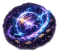
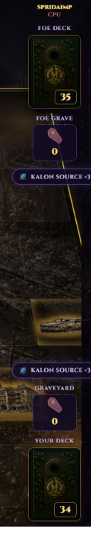
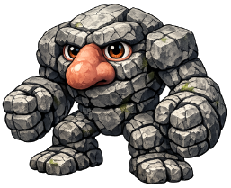
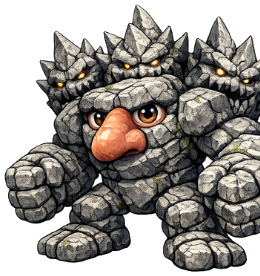
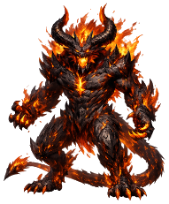
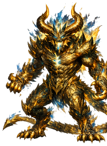
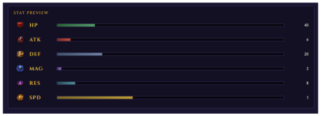
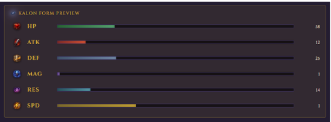
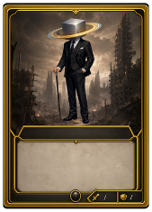

Chapter Three
Two resources fuel every match. One lets you act — the other lets you transcend.
The Fuel of Combat
Energy is the primary resource used during battle. It's required to play cards from your hand, activate attacks and abilities, and move your units and Heroes around the battlefield by swapping or repositioning between tiles.

At the start of each turn you gain 1 Energy by default. But certain cards, abilities, passives, and battlefield effects can generate additional Energy — letting you take more actions and execute powerful combinations in a single turn.
The Power of the Abra
The Kalon Source is the power of the Abra — a magical force that flows from Abraxas, letting users tap into their light and dark sides and transform into their highest selves.
Each player starts with only 3 Kalon Source points, and can gain more through cards, effects, and unit passives. For example, Kalon Channel is a passive that grants its owner 1 Kalon Source point whenever a unit they control kills another unit — fueling Kalon Transformations and other powerful means of summoning.
Reading the Rail
The side rail tracks both players' decks, graveyards, and Kalon Source at a glance.

Reaching the Highest Self
Many units begin battle in their base form, carrying their standard stats, abilities, and passives. But some possess a powerful evolution known as a Kalon Form — a unit reaching a higher state of power and growth.

Base Form
Kalon Form
Base Form
Kalon FormWhen a unit transforms, its stats climb sharply and certain Kalon Forms unlock entirely new passives, abilities, or special effects unavailable in the base form. Just as importantly, the unit's Health is fully restored — letting it return to the fight stronger than before and potentially reverse a losing situation.
The Numbers


An Exception to the Rule
Some units bend the rules of the Source entirely.

When this card is played from your hand, you may target a unit you control within its placement range. If that unit has a valid Kalon Transformation available, you may immediately transform it.
This effect does not consume a Kalon Source point — letting you access a unit's transformed form without paying the normal transformation cost.